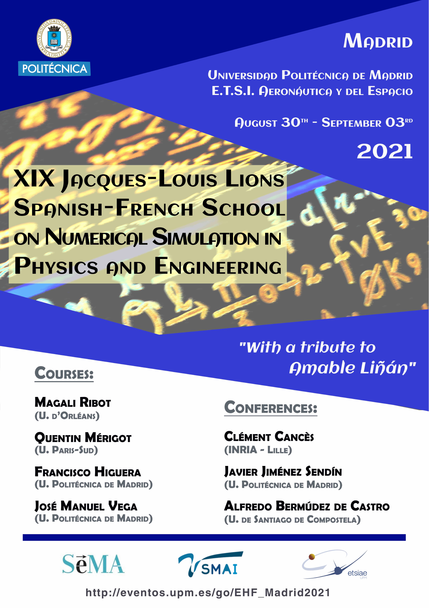
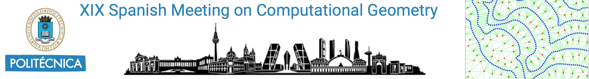
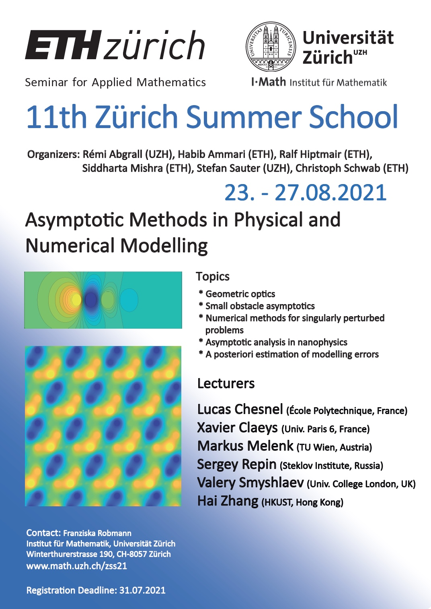

Anuncios
Queridos colegas,
Como sabéis, ya está abierta la inscripción de la XIX Escuela Hispano-Francesa Jacques-Louis Lions sobre Simulación Numérica en Física e Ingeniería.
Queríamos recordaros que durante la Escuela, en colaboración con la SEMA, se va a celebrar un homenaje a Amable Liñán la tarde del jueves 2 de septiembre en la ETSI Aeronáutica y del Espacio de la Universidad Politécnica de Madrid. Por supuesto no es necesario participar en la Escuela para acudir al homenaje pero el número de asistentes será necesariamente limitado. El acto podrá seguirse también a través de internet. En cualquier caso, es importante que nos hagáis saber si tenéis intención de participar, siguiendo las instrucciones en la página web del evento, para manteneros informados de las novedades y poder cumplir con las actuales condiciones que permite la covid-19.
Finalmente comentaros que la inscripción a precio reducido en la Escuela termina el 2 de julio. Podéis encontrar más información en la web del evento: http://eventos.upm.es/go/EHF_Madrid2021.
Estaremos encantados de recibiros en Madrid,
Comité Organizador: Carlos Castro, Miguel Hermanns, Fabricio Macià, María Luisa Rapún y Laura Saavedra.

El HYP2020/21 DAY se celebrará por videoconferencia el próximo 2 de julio de 2021 y es un evento satélite del HYP2022, que tendrá lugar en Málaga del 20 al 24 de junio de 2022. Las conferencias HYP son los congresos de referencia en el ámbito internacional sobre el estudio teórico y numérico de las ecuaciones en derivadas parciales hiperbólicas. La primera de ellas se celebró en 1986 en St. Etienne (Francia) y desde entonces se ha organizado cada dos años en diferentes lugares. Las anteriores ediciones se llevaron a cabo en: 2018 Penn State (EE. UU.), 2016 Aachen (Alemania), 2014 Río de Janeiro (Brasil), 2012 Padua (Italia), 2010 Beijing (China), 2008 College Park (EE. UU.), 2006 Lyon (Francia), entre otros.
HYP2020/21 DAY incluirá las charlas del primer conferenciante James Glimm, Constantine Dafermos (Universidad de Brown), y el primer premio Peter Lax, Jacob Bedrossian (Universidad de Maryland). El programa se completará con dos charlas a cargo de los profesores Manuel J. Castro (Universidad de Málaga) y Min Tang (Shanghai Jiaotong University, China).
En el marco del HYP2022 tendrá lugar también la entrega del Premio Peter Lax y la Conferencia James Glimm.
El Comité Científico del congreso XVIII International Conference on Hyperbolic Problems: Theory, Numerics, Applications (HYP2020) decidió instituir como parte de los congresos de la serie HYP el siguiente premio y conferencia distinguida:
Premio Peter Lax, en honor a las contribuciones seminales de este eminente matemático, que establecieron las bases de los modernos métodos teóricos y computacionales en el área de los sistemas hiperbólicos de leyes de conservación. Esta distinción será concedida a un joven investigador (diez años a lo sumo tras la defensa de su tesis doctoral) en cada congreso HYP. Conferencia James Glimm, denominada así en honor al insigne matemático, cuyas innovadoras ideas revolucionaron el área de investigación de las leyes de conservación hiperbólicas. Esta conferencia será impartida por un investigador senior de reconocido prestigio en el ámbito de las ecuaciones hiperbólicas, como parte constitutiva de todas las ediciones de los congresos HYP.
Tras un cuidadoso proceso de selección, el Comité Científico del HYP2020 ha decidido distinguir a su vez con el segundo Premio Peter Lax a Maria Colombo (EPFL, Suiza). y seleccionar como segundo conferenciante James Glimm a Benoît Perthame (Sorbonne-Université, Francia). Ambos impartirán sus conferencias en el HYP2022, que tendrá lugar en Málaga del 20 al 24 de junio de 2022.
El 163 ESGI —European Study Group with Industry—, organizado de forma conjunta entre el Instituto Tecnológico de Matemática Industrial (ITMATI) y la Red Española Matemática - Industria (math-in), tendrá lugar del 12 al 16 de julio de 2021 en formato videoconferencia.
Los ESGI constituyen un foro para trabajar de manera conjunta científicos industriales e investigadores matemáticos sobre problemas de interés para la industria. El 163 ESGI, que reunirá a especialistas de las ramas de Matemática Aplicada y Estadística e Investigación Operativa, tiene como objetivo el fomento de la transferencia Matemática hacia la Industria buscando activamente proyectos de investigación y desarrollo en donde la Matemática tenga una especial relevancia.
Debido a la pandemia de la covid-19, el evento será completamente en formato videoconferencia.
Toda la información relativa al evento se actualizará continuamente en la página web del mismo: http://www.math-in.net/163esgi/.
La asistencia es gratuita en la Modalidad Básica, pero es necesario registrarse previamente. La fecha límite de inscripción será el 5 de julio de 2021.
El 163 ESGI cuenta con la cofinanciación del Ministerio de Ciencia Innovación y Universidades – Agencia Estatal de Investigación (AEI), a través de la acción de dinamización «Redes de Investigación», convocatoria 2018, Red estratégica de Matemáticas (REM) (RED2018-102350-E) y la Red temática RTmath-in (RED2018-102514-T) y del proyecto ROMSOC (Reduced Order Modelling, Simulation and Optimization of coupled Systems), financiado dentro del Programa Marco de Investigación e Innovación Horizonte 2020 de la Unión Europea, en virtud del acuerdo de subvención Marie-Skłodowska-Curie nº 765374.
El idioma oficial del evento será el inglés.
Esperamos que esta información os resulte de interés y os animamos a participar en el evento.
Un grupo de compañeros y amigos del profesor Jesús Ildefonso Díaz están organizando un Congreso Internacional en su honor para conmemorar su 70 cumpleaños. La Conferencia Internacional se llevará a cabo por videoconferencia los días 13, 14 y 15 de julio de 2021.
El título de la conferencia es QUALITATIVE PROPERTIES OF NONLINEAR PDEs. An international conference on occasion of J.I. Díaz’s 70th birthday.
El profesor Díaz ha contribuido a este interesante tema, con muchas ideas fundamentales, técnicas y fructíferas colaboraciones con colegas de todo el mundo.
Algunos de los conferenciantes del evento son: Yves Meyer (Premio Abel y Premio Princesa de Asturias), Haïm Brezis, Roger Temam, Juan Luis Vázquez, Carlos Conca y un largo etc.
This conference is dedicated to the 75th birthday of Prof. E. F. Toro.
Abstract submission for NumHyp 2021 is open now. Please send your abstracts according to the templates provided on the conference website www.unitn.it/numhyp2021 until 13th of June 2021 to numhyp2021@unitn.it.
To encourage participation from all over the world, the conference will be held in a blended format. A limited number of invited speakers will be present onsite, and all other participants will be able to join the conference online.
For further questions please contact: numhyp2021@unitn.it.
Madrid, Spain, July 5-7, 2021
https://quantum-explore.com/egc21/

The congress will be online. The XIX Spanish Meeting on Computational Geometry (EGC) will be held on July 5-7, 2021, at the degree room of the Escuela Técnica Superior de Ingeniería de Sistemas Informáticos of the Universidad Politécnica de Madrid, Madrid, Spain. The main focus of this international conference is on current topics in Discrete and Computational Geometry, including both theoretical and applied results. This series of meetings started in 1990. The intended audience for this conference includes graduate and undergraduate students, researchers in the area or from neighboring disciplines, and members of industry whose work involves geometric algorithms. Topics include, but are not limited to:
The language of the conference is English, hence all international colleagues are welcome to join.

I would like to inform you that Mathematical Institute of Academy of Sciences together with Czech Technical University in Prague and University of Pittsburgh organize from August 23 till August 27, 2021 summer school in Prague: Fluids under Control. We would like to ask you to inform your young colleagues and students. Our plan is that the school will be partially hybrid, partially in person, according current situation. For more details see https://prague-sum.com/.
With the warmest regards from Prague
Šárka Nečasová

If you are looking for a permanent position as Research Professors or Research Associates, take a look at the Ikerbasque Research permanent positions Research Professors and Research Associates 2021 call.
Internal deadline for submission: July 16th, 2021
Are you looking for a Postdoctoral Fellowship? Take a step forward and apply for the Marie Skłodowska-Curie Postdoctoral Fellowships 2021 call.
Internal deadline for submission: July 31st, 2021
Take a look at PhD Position that BCAM has launched for H2020 Project ASTROTECH.
The ASTROTECH consortium aims at pioneering the field of “Glial Engineering,” to develop a consistent range of tools to record, study, and manipulate astrocytes in the healthy and diseased brain.
Deadline: June 30th, 2021
Take a look at the industrial PhD in collaboration with BMW Group in “Machine Learning applied to Computational Fluid Dynamics”.
Earliest starting date: 03/01/2021